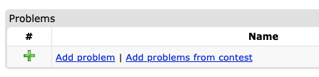
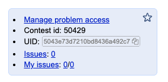
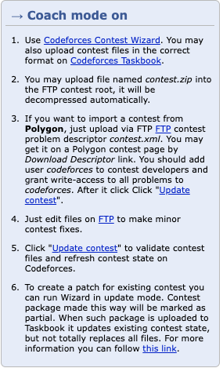

Packaging: Polygon#
rbx provides a command to build packages for Polygon. The Polygon format supports two types of packages: problem packages and contest packages.
Problem packages#
Problem packages are built by running the following command:
You can also specify the main language of the problem (in case you have multiple statements) using the -l or --language flag:
Or, if you want to build a problem package for each problem in your contest:
Contest packages#
There's also a contest-level command for building a contest package:
This command will build a single .zip file with all problems in the contest.
Uploading to Codeforces Gym#
There are two totally different ways of uploading Polygon packages to Codeforces Gym.
Using the Polygon API#
You can also upload your problem packages to Polygon, gather them into a Polygon contest, and import them in the Gym.
This is a process that is a bit more complicated, and has a few limitations, but that usually gives you a better result. The pros of using this method are:
- You'll get a Polygon problem instance for each problem in your contest. This means you can access the problem in Polygon, run some custom invocations, and even tune the time limit of each problem to Codeforces' machines.
- You can get HTML statements which render natively in Codeforces.
- Does not depend on the flaky Taskbook FTP.
Follow the step-by-step guide below to get your contest up in the Gym.
Step 1: Get a Polygon API key#
Log in to Polygon and go to the Settings page. In the API Keys section, create a new API key and save the generated pair.
Step 2: Upload all your problems to Polygon using the API#
You can upload all problems to the contest by defining the environment variables below and running the rbx command:
export POLYGON_API_KEY=<your-api-key>
export POLYGON_API_SECRET=<your-api-secret>
rbx contest each package polygon -u
You can also use the --upload-as-english flag to force the main statement to be uploaded as the English statement in Polygon, regardless of its actual language. This is useful because Codeforces uses a different -- not so good -- LaTeX renderer for statements in languages other than English.
Thus, it's often useful to use the English renderer regardless of the actual statement language.
Step 3: (Optional) Tune your time limits and statements to Polygon#
This is the optional part that we highly recommend following. There are two components in Polygon that might not work right out of the box when you upload your problem, and it's worth checking them and tuning them if necessary.
-
Time limits: The time limits might not work well in the Polygon machines. We recommend you to fire up a custom invocation in the Invocations section, and tune your time limit based on that in the General info section.
-
Statements: Polygon only supports rendering in HTML a subset of LaTeX commands. You might have to do some manual adjustments if you really want HTML statements in your contest. With some trial and error, it is easy to get a sense of which commands work and which don't.
Step 4: Create a new Polygon contest with all the problems#
Now that you have all your problems in Polygon, you can create a new contest and import all problems into it.
Click New contest in the top-right corner, and fill in the form. Then, enter the contest and add all problems
you uploaded to it. Finally, click Manage problem access and give read access to codeforces to all problems, and
to the contest itself.
After that, click Build standard packages to ensure the packages for all problems are built.
Step 5: Create a contest in the Gym and import the Polygon contest#
Enable coach mode, create a new contest and hit the Add problems from contest link.

In the following page, paste the contest UID in Polygon, and click the button. You can obtain the contest UID like in the picture below:

Iterating on the Polygon problem#
You can always follow step (2) again in to update the problem in Polygon after doing modifications to it. Sometimes, though, this process is too slow, and you might want to use faster methods.
Partial Uploads#
If you want to upload only specific parts of the problem (e.g. only statements, or only source files), you can use the --upload-only flag. Conversely, if you want to skip certain parts, you can use --upload-skip (or --dont-upload internally, but exposed as skip).
Supported values are: statements, solutions, tests, files.
# Upload only statements and files (checker/interactor/validator/headers)
rbx contest each package polygon -u --upload-only statements --upload-only files
# Upload everything EXCEPT tests
rbx contest each package polygon -u --upload-skip tests
Feel free to keep those variables in your .bashrc (or equivalent in other shells) file if you want.
This will create a Polygon problem for each problem in your contest following the pattern <contest-name>-<problem-shortname>-<problem-name> (example: my-contest-a-my-problem for a contest named my-contest with a problem named my-problem which has the letter A).
This problem will contain the validator, checker, interactor, and any other files you added to the problem. The time and memory limits will also be synced with Polygon, but often it's a good idea to tune them manually in the Polygon interface.
The statement blocks will also be uploaded to Polygon, along with all model solutions. Solutions that are no longer present in the package will be removed from Polygon (marked as deleted).
Testcases are also uploaded. If your package uses generators, the generators are uploaded and the script is updated in Polygon to generate the tests. Manual tests (without generators) are uploaded as files.
Using the Taskbook FTP (flaky)#
You can upload a contest package to Codeforces Gym by first building it with the command above, and then using the Codeforces Taskbook FTP (taskbook.codeforces.com) to upload your zip file to your contest.
You can read more about the Taskbook by enabling coach mode, creating a new contest in the Gym, and looking at the "Coach mode on" section on the right side of the contest page. It will look like the image below:

Follow the instructions to upload your contest ZIP.
Note
By uploading through the Taskbook, you'll only get PDF statements. That is not a limitation of rbx, but rather the way Codeforces Gym and Taskbook work (probably for safety reasons as otherwise people could inject arbitrary HTML code into Codeforces).
If you prefer HTML statements, you can use the option above.
Danger
Quite often the Taskbook FTP will be down. It seems this endpoint is not very reliable anymore. Refer to the option below, which is a bit more complicated but more reliable.
Caveats#
Warning
The caveats in this section are probably the main reason you should consider using Polygon directly if your main goal is to hold a Gym contest.
The Polygon API has a few limitations. The main two, which have huge implications on how rbx uploads your problems, are:
- The API doesn't allow you to remove solutions from a problem;
- The API doesn't allow you to remove manual tests from a problem.
This means that, whenever you remove a few manual tests from a problem, or a solution, and re-upload, you have to manually get rid of them. rbx will successfully replace every test index that still exists, and also the solutions that exist, but it won't do anything to remove old ones.
Instead, rbx will just mark the removed solutions as deleted and ensure they're not run, but they'll still show in Polygon.
Also notice that whenever you tune your time limits or statements in Polygon and re-issue an upload, those modifications you did will be overridden. You have to be extra careful with that. Preferrably, you should replicate all your statement changes in rbx before uploading to Polygon.